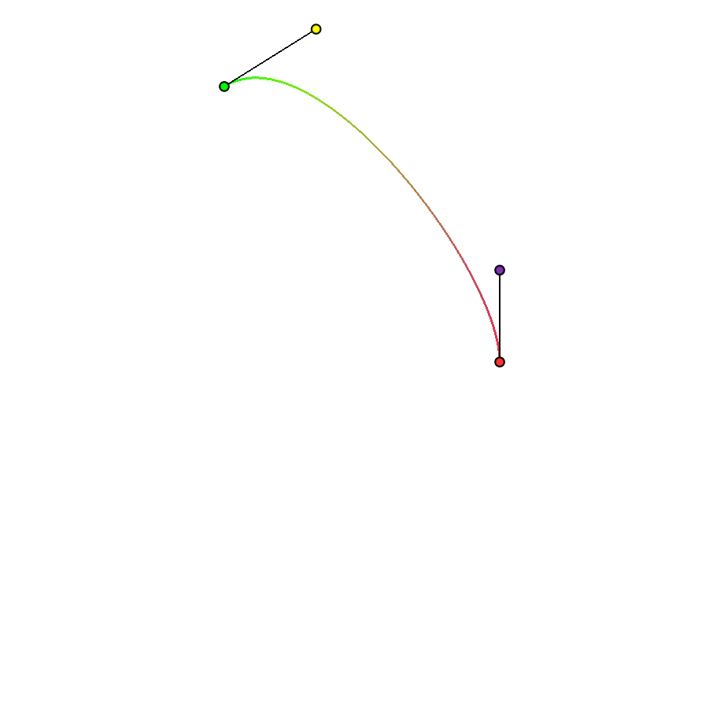
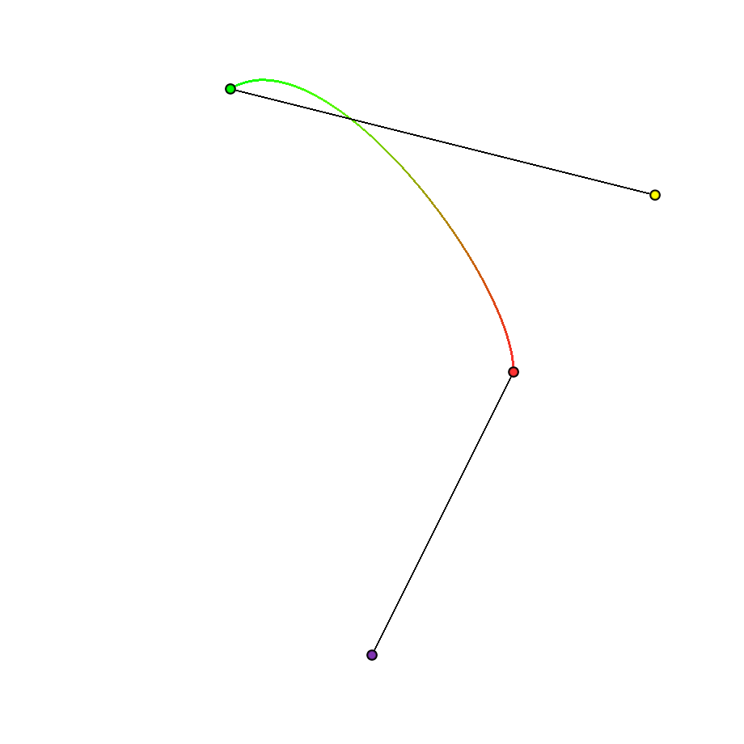
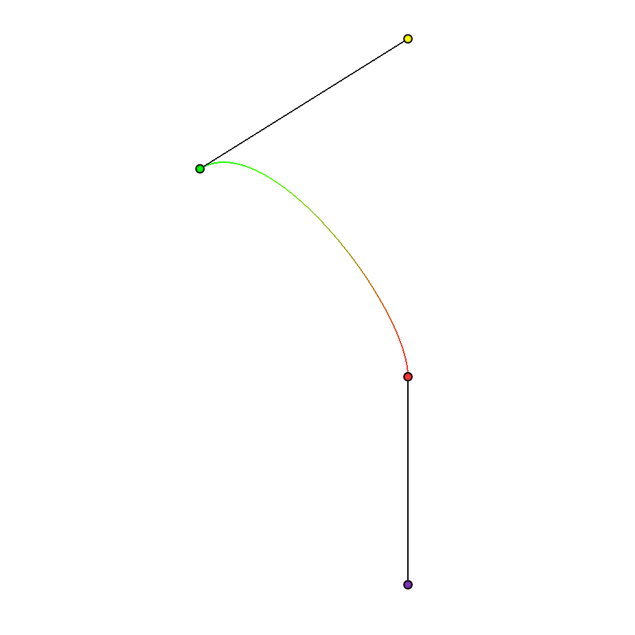
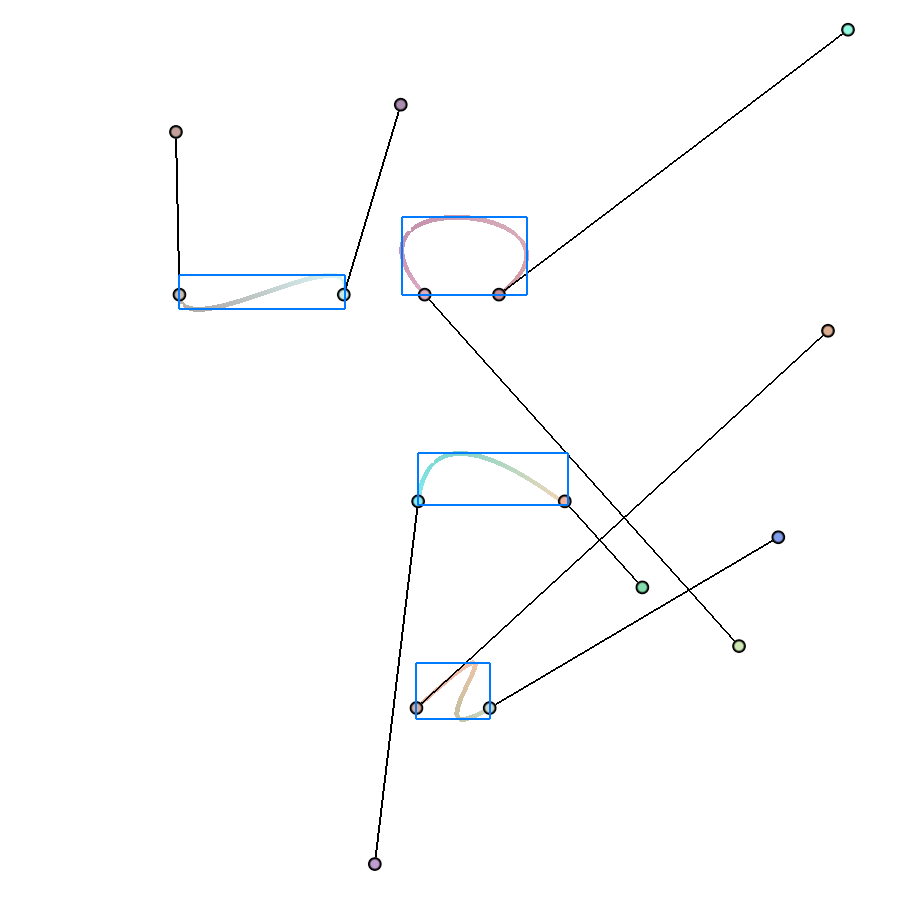

On cubic Bezier and Hermite curves
October 31, 2024
Bezier and Hermite curves
A cubic Bezier curve with four control points $P_0, P_1, P_2, P_3$ is defined as a linear combination of its control points, where the weights are determined by a set of blending functions like so:
$$ \mathbf{b}(t) = \begin{pmatrix} 1 & t & t^2 & t^3 \end{pmatrix} \begin{pmatrix} 1 & 0 & 0 & 0 \newline -3 & 3 & 0 & 0 \newline 3 & -6 & 3 & 0 \newline -1 & 3 & -3 & 1 \newline \end{pmatrix} $$
These blending functions are referred to as cubic Bernstein basis functions, which span the space of cubic polynomials. We can easily throw this into a tessellation shader and let the GPU work its magic:

Another common representation of the cubic curve is the Hermite curve, whose blending functions are defined by: $$ \mathbf{h}(t) = \begin{pmatrix} 1 & t & t^2 & t^3 \end{pmatrix} \begin{pmatrix} 1 & 0 & 0 & 0 \newline 0 & 1 & 0 & 0 \newline -3 & -2 & -1 & 3 \newline 2 & 1 & 1 & -2 \newline \end{pmatrix} $$
Abstracting it like this shows that the only difference between Hermite and Bezier is the change in basis, which is why the matrix on the right is called the basis matrix.
My ordering of the matrix corresponds to the same ordering of points in the Bezier representation. In other words, $P_0$ and $P_3$ are still the points being directly interpolated, and $P_1$ and $P_2$ are their tangent handles respectively (Some people order these points differently for the Hermite curve, and consequently the basis matrix is slightly different).
If we have the point vector $[P_0, P_1, P_2, P_3]^{\top}$ for the Hermite curve, we can find the Bezier tangent handles $B_1$ and $B_2$ by a simple conversion: $$ B_1 = P_0 + \frac{1}{3} \cdot P_1 $$ $$ B_2 = P_3 - \frac{1}{3} \cdot P_2 $$ while the interpolated points $B_0$ and $B_3$ are exactly the same as $P_0$ and $P_3$ respectively.
Now let’s run these shaders. I feed some point vector $\mathbf{h}$ into the hermite4() function, then perform the above conversion to get point vector $\mathbf{b}$, which I pass into the bezier4() function. Then I draw the four points exactly how they are passed in to form the curve.

This drawing of the Hermite curve seems a bit weird, particularly at the handles. Recall that Hermite handles represent the tangents at their respective endpoints, so drawing their direct value is a bit meaningless and doesn’t give us intuition about the geometry of the curve, even though these values are quite literally what form the entire curve. A more meaningful visualization would draw the handles as vectors relative to their endpoint (which is essentially what the Bezier does by implying this relationship):

This is actually how the Hermite curve is drawn in practice, which explains one more subtle difference between Hermite and Bezier curves I didn’t intentionally introduce until now. Hermite handles represent tangents while Bezier handles are points with positions.
Once again we are reminded the importance of distinguishing between a point and a vector :)
Computing the bounding box
To compute the bounding box of the cubic curve, we can find the minima and maxima of the curve by finding the derivative at $t$. Finding the Bernstein polynomial for the derivative parameter vector: $$ \mathbf{B}’(t) = \begin{pmatrix} 0 & 1 & 2t & 3t^2 \end{pmatrix} \begin{pmatrix} 1 & 0 & 0 & 0 \newline -3 & 3 & 0 & 0 \newline 3 & -6 & 3 & 0 \newline -1 & 3 & -3 & 1 \newline \end{pmatrix} \begin{pmatrix} P_0 \newline P_1 \newline P_2 \newline P_3 \newline \end{pmatrix} = \begin{pmatrix} 0 \newline 3 (-P_0 + P_1) \newline 6(P_0 - 2P_1 + P_2)t \newline 3(-P_0 + 3P_1 - 3P_2 + P_3)t^2 \newline \end{pmatrix} $$
Then you can find where $t=0$ in $\mathbf{B}’(t)$ by plugging in the coefficients into the quadratic formula. The coefficients are nicely extractable from the product of the above equation. This is the same method as outlined in this post by Inigo Quilez, which also includes shader code for the Bezier bounding box.
The Hermite curve equations are just as straightforward: $$ \mathbf{H}’(t) = \begin{pmatrix} 0 & 1 & 2t & 3t^2 \end{pmatrix} \begin{pmatrix} 1 & 0 & 0 & 0 \newline 0 & 1 & 0 & 0 \newline -3 & -2 & -1 & 3 \newline 2 & 1 & 1 & -2 \newline \end{pmatrix} \begin{pmatrix} P_0 \newline P_1 \newline P_2 \newline P_3 \newline \end{pmatrix} = \begin{pmatrix} 0 \newline P_1 \newline 2(-3P_0-2P_1 - P_2 + 3P_3)t \newline 3(2P_0 + P_1 + P_2 - 2P_3)t^2 \newline \end{pmatrix} $$
So solving for the quadratic equation $3t^2 + 2t + 1 = 0$, the solutions for $t$ can be found using $t=\frac{b \pm \sqrt{b^2 - 3ac}}{3a}$, which translates directly into code (in my use case, on the CPU):
AABB hermiteAABB(glm::vec2 p0, glm::vec2 p1, glm::vec2 p2, glm::vec2 p3)
{
AABB aabb{glm::min(p0, p3), glm::max(p0, p3)};
auto [_, c, b, a] = applyCubicBasis({p0, p1, p2, p3}, hermiteBasisMat);
a *= 3.0f;
auto discrim = b * b - a * c;
for (int i = 0; i < 2; ++i)
{
if (discrim[i] < 0.0f)
continue;
float sqrtDiscrim = glm::sqrt(discrim[i]);
float tm = (-b[i] - sqrtDiscrim) / a[i];
float tp = (-b[i] + sqrtDiscrim) / a[i];
if (tm > 0.0f && tm < 1.0f)
aabb.expand(interpolateCubic(p0, p1, p2, p3, tNeg, hermiteBasisMat));
if (tp > 0.0f && tp < 1.0f)
aabb.expand(interpolateCubic(p0, p1, p2, p3, tPos, hermiteBasisMat));
}
return aabb;
}
The result looks like:

Further learning
- Freya Holmer’s video serves as a wonderful and gentle introduction to splines (including Bezier and others). In fact, her video kickstarted my own learning about the topic.